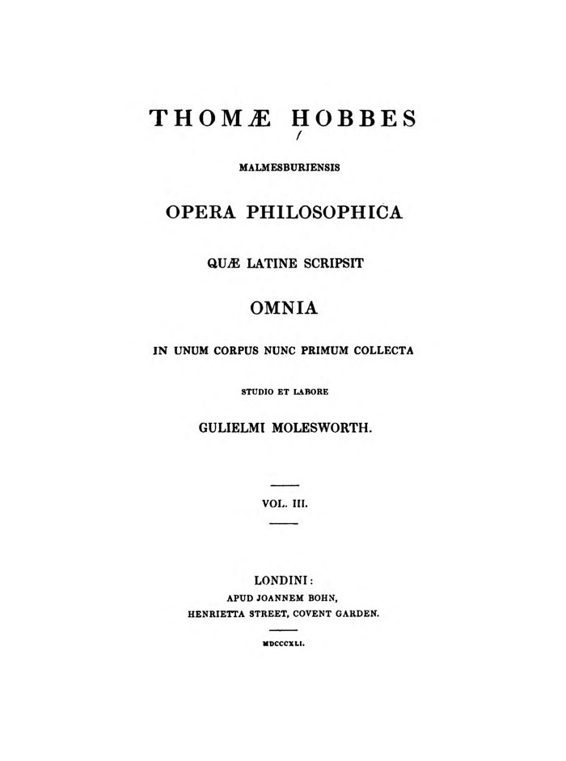

“Inter rebellionis causas maximas” (pp. 235–236)
Latin: p. 235 to p. 236. Highlighted: Lecky’s words. Text between is in grey.

Separately, in monarchies, among the chief causes of rebellion may be counted the reading of the political and historical books which the ancient Greeks and Romans wrote. For young men and others, whoever have not before been armed with an antidote of sound reason, receiving a vivid and pleasant impression of the things these writers record as magnificently done in war, admire the rest of their actions too, and attribute the greatness of those states not, as they should, to the virtue of certain citizens, but to the popular form of government. It is from the reading of these books, I say, that some men have killed their king, because such deeds are not called crimes, as they are, by those writers, but are extolled with the highest praise, provided that, before they kill, they call the man a tyrant. It is from the reading of the same books that those who live under a monarch say that they are indeed slaves, and that those who are governed democratically are alone free. To me, therefore, nothing seems more harmful to monarchies than to permit such books to be taught publicly, unless at the same time remedies are applied by wise teachers by which the poison may be corrected. I like to compare this disease with hydrophobia, namely the disease that arises from the bite of a rabid dog. …
Original Latin
Seorsum in monarchiis, inter rebellionis causas maximas numerari potest librorum politicorum et historicorum, quos scripserunt veteres Græci et Romani, lectio. Juvenes enim aliique, quicunque rationis solidæ antidoto muniti ante non fuerint, rerum ab illis bello magnifice gestarum vividam jucundamque impressionem concipientes, cæteras eorum actiones admirantur, civitatumque illarum magnitudinem imputant non, ut oportuit, virtuti quorundam civium, sed regiminis formæ populari. Ab horum librorum, inquam, lectione est, quod nonnulli homines regem suum interfecerunt, quia facinora talia apud scriptores illos non flagitia, ut sunt, appellantur, sed maximis laudibus extolluntur, modo, antequam interficiant, tyrannum appellent. A lectione eorundem librorum est, quod qui sub monarcha vivunt, se quidem servos, illos autem, qui democratice gubernantur, solos esse liberos dicant. Mihi ergo monarchiis nihil videtur esse damnosius posse, quam permittere ut hujusmodi libri publice doceantur, nisi simul a magistris sapientibus, quibus venenum corrigi possit, remedia applicentur. Morbum hunc comparare libet cum hydrophobia, nempe, morbo qui oritur a morsu canis rabidi. …
| Lecky, 1865 (note 118) | Hobbes, Molesworth ed. | |
|---|---|---|
| Opening | Inter rebellionis causas maximas numerari potest librorum politicorum et historicorum quos scripserunt veteres Græci et Romani lectio. | Seorsum in monarchiis, inter rebellionis causas maximas numerari potest librorum politicorum et historicorum, quos scripserunt veteres Græci et Romani, lectio. |
| Verb | Morbum hunc comparari libet | Morbum hunc comparare libet |
| Gap | “. . . .” between the two sentences | the omitted part is shown in grey above |
Lecky’s “comparari” is probably a misprint or a different reading: comparare (“I like to compare”) is what the edition here prints. He also drops “Seorsum in monarchiis” (“Separately, in monarchies”), which restricts Hobbes’s point to monarchies; Lecky’s “this tendency of the classical writings” still fits. Lecky’s “burst of extreme indignation” is his characterisation; the Latin is a measured argument rather than an outburst.
Editor’s notes on this page
Lecky says Hobbes expressed “a burst of extreme indignation” at the influence of the classics on the politics of rebellion. The Latin he quotes is Hobbes’s, with one small change (“comparari libet” for Hobbes’s “comparare libet”) and a long cut that Lecky marks with dots. The cut is the argument: young men, not armed with a solid antidote, take the Greek and Roman writers’ glorification of their wars and tyrannicides, and the “democratic” freedom of those states, as models.
Further down the rabbit hole
Sources that Lecky cites in the notes next to the ones that cite this page.
- Vindiciae contra tyrannosElijah’s massacre of the priests of Baal as a precedent for lawful rebellion
- Montaigne, Essais, II.12Lecky cuts Montaigne short and changes a word
- An Homily against Disobedience and Wilful RebellionHell as the prison of rebels: the Church of England preaches obedience
- Aquinas, Summa theologiae, II-IIHeretics and forgers; the usurper’s subjects
- Ayala, De jure et officiis bellicisAnyone may kill a usurper, not a lawful prince
- Barrington, Observations on the More Ancient StatutesHenry VIII’s 72,000 hangings, and why English thieves had “better hearts”


Backlinks
Every place in Rationalism in Europe that links to this page (generated automatically when the site is built).